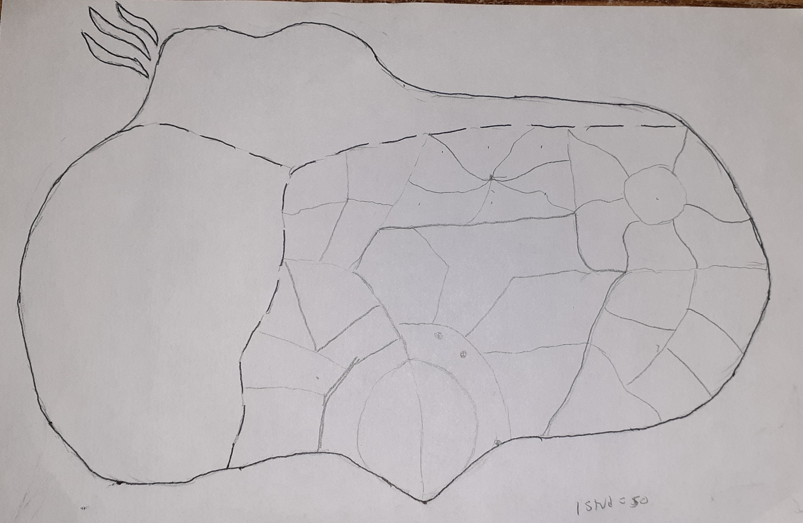

Arboria
Arboria is known as the cradle of life among all the continents. It hosts a wide variety of races and people. The majority of it is filled with green plains and lush forests. Mountains dot the landscape. It’s the third largest of the continents and is home to three nations. The first is the Razden Kingdom who occupies the South East and largest portion of land. The second is Pedalon who occupies the South West. Finally, Xathorn covers the North West area and a fine line of the North East. A few gnome and elven tribes live in the hilly woodland, but most are secluded and known only to the closest towns who respect them.
Razden
Razden was established by Razden Mar during the Ancient Era. At the time Arboria was overwhelmed by evil goblins. To combat them he teamed up with his childhood friend Ezyrian Arcan. Gathering soldiers from the various human settlements he created an army large enough to scatter the goblin armies. They expanded the kingdoms influence and reached far across Arboria. After years of fighting Razden decided that combat was not the best option. He began fortifying what they already controlled. Meanwhile Ezyrian had established a Magic Academy to train magic troops. When Razden began using diplomacy, it was transformed into a hub of all things magic. The capital of the Razden Kingdom became Edgepoint, the first ground gained by their swords. Magis, Ezyrian's city formed around his academy, became the secondary capital. Magis gained artificers and alchemists as the ways of those came into existence around the Exploration Era. Throughout the Eras Razden is a peaceful kingdom and only engages in heavy defense. While goblins were its main enemy in the beginning, they are now accepting, though still wary, of good goblins. Most goblins are now neutral, and it is hobgoblins and bugbears that lead them into more dangerous paths. Many goblins do still try to raid and steal, just not in the best places. Razden is ruled by humans, but welcomes elves, dwarves, gnomes, hangings, tieflings, dragonborn and all other races into its kingdom.
Pendalon
Pedalon was established shortly after Razden began diplomacy. When it reached Razden's borders, there was a quick skirmish before Pedalon founder Steven decided that peace was a better option. The smaller nation opened trade routes with Razden and began adopting some similar policies including allowing all races, with an exception of goblins, to join the nation. Pedalon became major dye traders and also seafaring. Noticibly Pedalon tries to do peace, but usually resorts to battle quickly. They are enemies of pirates.
Xathorn
Xathorn is a collection of tribes that became clans and then a kingdom. They are often more hostile and employ many barbarians. Drow can often be seen living alongside the population, and mostly humans and half orcs live there. Xathorn came to power in the Exploration Era and often I thought to be up to evil, but more often than not the normal population is nice. Just the corrupt leaders and the drow are always brewing up trouble.